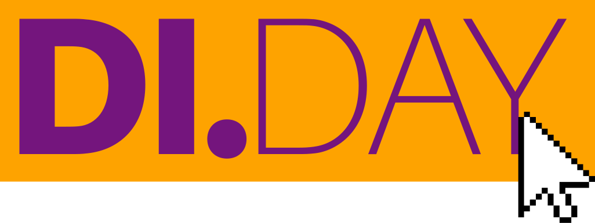

Digital Independence Day, Mai 2026
April 21, 2026

Am 3. Mai bin ich mit der Datenburg in der Brotfabrik und helfe mit beim Digital Independence Day. An diesem Tag und an jedem ersten Sonntag im Monat helfen wir Menschen, ihre digitale Unabhängigkeit wieder zu bekommen.
Wir zeigen ihnen, wie sie einen noch gar nicht so alten Laptop, der von Windows langsam gemacht oder gar nicht mehr unterstützt wird, wieder für produktives Arbeiten nutzen können, indem sie Windows einfach durch Linux ersetzen.
Oder wie sie den sicheren Messenger Signal auf ihrem Handy installieren und so weiter mit Freunden und Familie in Kontakt bleiben, ohne Mark Zuckerberg immer noch reicher zu machen.
Oder wie sie sich aus den süchtig machenden und hasserfüllten Klauen von Instagram, Facebook, X und Tiktok befreien können und endlich wieder kultivierte Online-Unterhaltungen in Fediverse-Diensten wie Mastodon oder Pixelfed führen können.
Also, kommt am 2026-05-03 ab 14 Uhr in die Beueler Brotfabrik, bringt euren Laptop oder euer Handy mit und lasst euch neue Wege zeigen. Der Link führt auf das Angebot Tauschmarkt des Klimaviertels Beuel, der zur gleichen Zeit in der Brotfabrik stattfindet. Wir sind aber definitiv auch dort. Informationen zu unserem Angebot findet ihr auf den Seiten des Digital Independence Days. Aber nein, wir sind am 3.5. definitiv in der Brotfabrik und nicht in der Bornheimer Str.